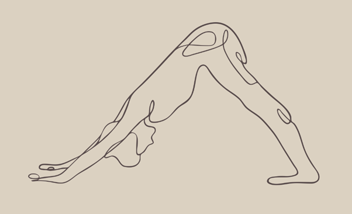

Little bit about Yoga
Yoga is a Sanskrit word translated as “yoke” or “union.” To yoke means to draw together, to bind together; or to unite. Its aim is to create a union of the body, mind, soul, and universal consciousness. This process of uniting the physical, mental, emotional, and spiritual aspects of ourselves is what allows yogis to experience deep states of freedom, peace and self-realization.
Yoga is an ancient system of physical, mental and spiritual practices that have been passed down through the generations from teacher to student. Yogic practices include breathing techniques, postures, relaxation, chanting, and other meditation methods. There are many different styles of yoga, each with their own unique focus and approach to creating a unitive state.
Little bit about Pilates
Pilates is a method of exercise that was created by Joseph Pilates in the early 20th century. It uses about 50 exercises to work the muscles, especially the core, and improve balance, posture, flexibility, and functional movement. Pilates is low-intensity and low-impact, and it coordinates movement and breath.
Pilates was originally designed for injury recovery, especially for dancers, but it can benefit anyone who wants to enhance their daily activities and livelihood.
Pilates involves precise moves and specific breathing techniques. It's suitable for people of all ages and fitness levels.
The optimal strength gained from a consistent Pilates practice is nonrigid, balancing strength with mobility and flexibility. It helps you move and breathe through your daily activities with more freedom and power and less pain.